What normalization is and what role it plays in the database design process
What normalization is and what role it plays in the database design process6 NORMALIZATION OF DATABASE TABLES
In this chapter, you will learn:
What normalization is and what role it plays in the database design process
About the normal forms 1NF, 2NF, 3NF, BCNF, and 4NF
How normal forms can be transformed from lower normal forms to higher normal forms
That normalization and ER modeling are used concurrently to produce a good database design
That some situations require denormalization to generate information efficiently
Preview
Good database design must be matched to good table structures. In this chapter, you will learn to evaluate and design good table structures to control data redundancies, thereby avoiding data anomalies. The process that yields such desirable results is known as normalization.
To recognize and appreciate the characteristics of a good table structure, it is useful to examine a poor one. Therefore, the chapter begins by examining the characteristics of a poor table structure and the problems it creates. You then learn how to correct the table structure. This methodology will yield important dividends: you will know how to design a good table structure and how to repair a poor one.
You will discover not only that data anomalies can be eliminated through normalization, but that a properly normalized set of table structures is actually less complicated to use than an unnormalized set. In addition, you will learn that the normalized set of table structures more faithfully reflects an organization’s real operations.
6.1 DATABASE TABLES AND NORMALIZATION
Having good relational database software is not enough to avoid the data redundancy discussed in Chapter 1, Database Systems. If the database tables are treated as though they are files in a file system, the relational database management system (RDBMS) never has a chance to demonstrate its superior data-handling capabilities.
The table is the basic building block of database design. Consequently, the table’s structure is of great interest. Ideally, the database design process explored in Chapter 4, Entity Relationship (ER) Modeling, yields good table structures. Yet, it is possible to create poor table structures even in a good database design. How do you recognize a poor table structure, and how do you produce a good table? The answer to both questions involves normalization. Normalization is a process for evaluating and correcting table structures to minimize data redundancies, thereby reducing the likelihood of data anomalies. The normalization process involves assigning attributes to tables based on the concept of determination you learned in Chapter 3, The Relational Database Model.
Normalization works through a series of stages called normal forms. The first three stages are described as first normal form (1NF), second normal form (2NF), and third normal form (3NF). From a structural point of view, 2NF is better than 1NF, and 3NF is better than 2NF. For most purposes in business database design, 3NF is as high as you need to go in the normalization process. However, you will discover that properly designed 3NF structures also meet the requirements of fourth normal form (4NF).
Although normalization is a very important ingredient in database design, you should not assume that the highest level of normalization is always the most desirable. Generally, the higher the normal form, the more relational join operations you need to produce a specified output; also, more resources are required by the database system to respond to end-user queries. A successful design must also consider end-user demand for fast performance. Therefore, you will occasionally need to denormalize some portions of a database design to meet performance requirements. Denormalization produces a lower normal form; that is, a 3NF will be converted to a 2NF through denormalization. However, the price you pay for increased performance through denormalization is greater data redundancy.
NOTE
Although the word table is used throughout this chapter, formally, normalization is concerned with relations. In Chapter 3 you learned that the terms table and relation are frequently used interchangeably. In fact, you can say that a table is the implementation view of a logical relation that meets some specific conditions. (See Table 3.1.) However, being more rigorous, the mathematical relation does not allow duplicate tuples, whereas they could exist in tables (see Section 6.5). Also, in normalization terminology, any attribute that is at least part of a key is known as a prime attribute instead of the more common term key attribute, which was introduced earlier. Conversely, a nonprime attribute, or a nonkey attribute, is not part of any candidate key.
6.2 THE NEED FOR NORMALIZATION
Normalization is typically used in conjunction with the entity relationship modeling that you learned in the previous chapters. Database designers commonly use normalization in two situations. When designing a new database structure based on the business requirements of the end users, the database designer will construct a data model using a technique such as Crow’s Foot notation ERDs. After the initial design is complete, the designer can use normalization to analyze the relationships among the attributes within each entity and determine if the structure can be improved through normalization. Alternatively, database designers are often asked to modify existing data structures that can be in the form of flat files, spreadsheets, or older database structures. Again, by analyzing relationships among the attributes or fields in the data structure, the database designer can use the normalization process to improve the existing data structure and create an appropriate database design. Whether you are designing a new database structure or modifying an existing one, the normalization process is the same.
To get a better idea of the normalization process, consider the simplified database activities of a construction company that manages several building projects. Each project has its own project number, name, assigned employees, and so on. Each employee has an employee number, name, and job classification, such as engineer or computer technician.
The company charges its clients by billing the hours spent on each contract. The hourly billing rate is dependent on the employee’s position. For example, one hour of computer technician time is billed at a different rate than one hour of engineer time. Periodically, a report is generated that contains the information displayed in Table 6.1.
The total charge in Table 6.1 is a derived attribute and is not stored in the table at this point.
The easiest short-term way to generate the required report might seem to be a table whose contents correspond to the reporting requirements. (See Figure 6.1.)
FIGURE 6.1 Tabular representation of the report format
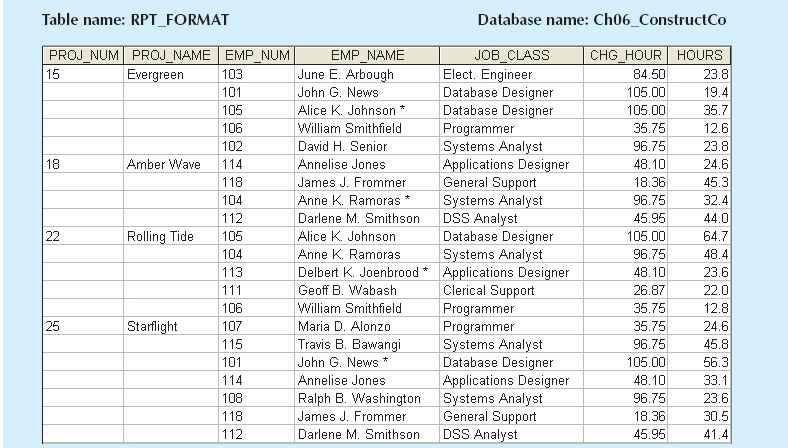
SOURCE: Course Technology/Cengage Learning
 ONLINE CONTENT
ONLINE CONTENT
The databases used to illustrate the material in this chapter are available at www.cengagebrain.com.
Note that the data in Figure 6.1 reflect the assignment of employees to projects. Apparently, an employee can be assigned to more than one project. For example, Darlene Smithson (EMP_NUM = 112) has been assigned to two projects: Amber Wave and Starflight. Given the structure of the dataset, each project includes only a single occurrence of any one employee. Therefore, knowing the PROJ_NUM and EMP_NUM values will let you find the job classification and its hourly charge. In addition, you will know the total number of hours each employee worked on each project. (The total charge—a derived attribute whose value can be computed by multiplying the hours billed and the charge per hour—has not been included in Figure 6.1. No structural harm is done if this derived attribute is included.)
TABLE 6.1 A Sample Report Layout
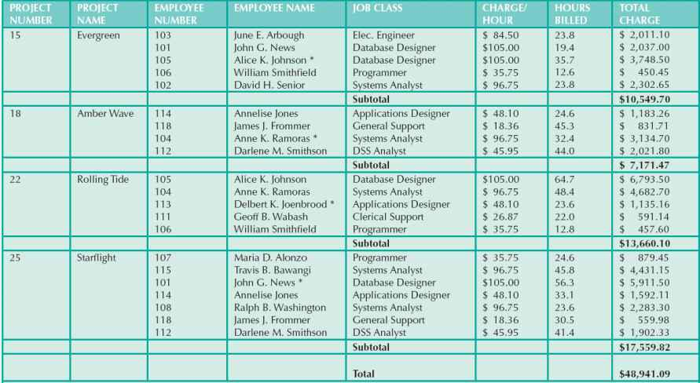
Note: A * indicates the project leader.
Unfortunately, the structure of the dataset in Figure 6.1 does not conform to the requirements discussed in Chapter 3, nor does it handle data very well. Consider the following deficiencies:
1. The project number (PROJ_NUM) is apparently intended to be a primary key (PK) or at least a part of a PK, but it contains nulls. Given the preceding discussion, you know that PROJ_NUM + EMP_NUM will define each row.
2. The table entries invite data inconsistencies. For example, the JOB_CLASS value “Elect. Engineer” might be entered as “Elect.Eng.” in some cases, “El. Eng.” in others, and “EE” in still others.
3. The table displays data redundancies that yield the following anomalies:
a. Update anomalies. Modifying the JOB_CLASS for employee number 105 requires many potential alterations, one for each EMP_NUM = 105.
b. Insertion anomalies. Just to complete a row definition, a new employee must be assigned to a project. If the employee is not yet assigned, a phantom project must be created to complete the employee data entry.
c. Deletion anomalies. Suppose that only one employee is associated with a given project. If that employee leaves the company and the employee data are deleted, the project information will also be deleted. To prevent the loss of the project information, a fictitious employee must be created.
In spite of those structural deficiencies, the table structure appears to work; the report is generated with ease. Unfortunately, the report might yield varying results depending on what data anomaly has occurred. For example, if you want to print a report to show the total “hours worked” value by the job classification “Database Designer,” that report will not include data for “DB Design” and “Database Design” data entries. Such reporting anomalies cause a multitude of problems for managers—and cannot be fixed through application programming.
Even if careful data-entry auditing can eliminate most of the reporting problems (at a high cost), it is easy to demonstrate that even a simple data entry becomes inefficient. Given the existence of update anomalies, suppose Darlene M. Smithson is assigned to work on the Evergreen project. The data-entry clerk must update the PROJECT file with the following entry:
15 Evergreen 112 Darlene M. Smithson DSS Analyst $45.95 0.0
to match the attributes PROJ_NUM, PROJ_NAME, EMP_NUM, EMP_NAME, JOB_CLASS, CHG_HOUR, and HOURS. (If Smithson has just been assigned to the project, the total number of hours worked is 0.0.)
NOTE
Remember that the naming convention makes it easy to see what each attribute stands for and its likely origin. For example, PROJ_NAME uses the prefix PROJ to indicate that the attribute is associated with the PROJECT table, while the NAME component is self-documenting as well. However, keep in mind that name length is also an issue, especially in the prefix designation. For that reason, the prefix CHG was used rather than CHARGE. (Given the database’s context, it is not likely that the prefix will be misunderstood.)
Each time another employee is assigned to a project, some data entries (such as PROJ_NAME, EMP_NAME, and CHG_HOUR) are unnecessarily repeated. Imagine the data-entry chore when 200 or 300 table entries must be made! The entry of the employee number should be sufficient to identify Darlene M. Smithson, her job description, and her hourly charge. Because only one person is identified by the number 112, that person’s characteristics (name, job classification, and so on) should not have to be entered each time the main file is updated. Unfortunately, the structure displayed in Figure 6.1 does not make allowances for that possibility.
The data redundancy evident in Figure 6.1 leads to wasted disk space. Even worse, data redundancy produces data anomalies. For example, suppose the data-entry clerk had entered the data as:
15 Evergeen 112 Darla Smithson DCS Analyst $45.95 0.0
At first glance, the data entry appears to be correct. But is Evergeen the same project as Evergreen? And is DCS Analyst supposed to be DSS Analyst? Is Darla Smithson the same person as Darlene M. Smithson? Such confusion is a data integrity problem because the data entry failed to conform to the rule that all copies of redundant data must be identical.
The possibility of introducing data integrity problems caused by data redundancy must be considered during database design. The relational database environment is especially well suited to help the designer overcome those problems.
In this section, you will learn how to use normalization to produce a set of normalized tables to store the data that will be used to generate the required information. The objective of normalization is to ensure that each table conforms to the concept of well-formed relations—in other words, tables that have the following characteristics:
• Each table represents a single subject. For example, a course table will contain only data that directly pertain to courses. Similarly, a student table will contain only student data.
• No data item will be unnecessarily stored in more than one table (in short, tables have minimum controlled redundancy). The reason for this requirement is to ensure that the data are updated in only one place.
• All nonprime attributes in a table are dependent on the primary key—the entire primary key and nothing but the primary key. The reason for this requirement is to ensure that the data are uniquely identifiable by a primary key value.
• Each table is void of insertion, update, or deletion anomalies, which ensures the integrity and consistency of the data.
To accomplish the objective, the normalization process takes you through the steps that lead to successively higher normal forms. The most common normal forms and their basic characteristic are listed in Table 6.2. You will learn the details of these normal forms in the indicated sections.
NORMAL FORM | CHARACTERISTIC | SECTION |
First normal form (1NF) | Table format, no repeating groups, and PK identified | 6.3.1 |
Second normal form (2NF) | 1NF and no partial dependencies | 6.3.2 |
Third normal form (3NF) | 2NF and no transitive dependencies | 6.3.3 |
Boyce-Codd normal form (BCNF) | Every determinant is a candidate key (special case of 3NF) | 6.6.1 |
Fourth normal form (4NF) | 3NF and no independent multivalued dependencies | 6.6.2 |
The concept of keys is central to the discussion of normalization. Recall from Chapter 3 that a candidate key is a minimal (irreducible) superkey. The primary key is the candidate key selected to be the primary means used to identify the rows in the table. Although normalization is typically presented from the perspective of candidate keys, this initial discussion assumes for the sake of simplicity that each table has only one candidate key; therefore, that candidate key is the primary key.
From the data modeler’s point of view, the objective of normalization is to ensure that all tables are at least in third normal form (3NF). Even higher-level normal forms exist. However, normal forms such as the fifth normal form (5NF) and domain-key normal form (DKNF) are not likely to be encountered in a business environment and are mainly of theoretical interest. Such higher normal forms usually increase joins, which slows performance without adding any value in the elimination of data redundancy. Some very specialized applications, such as statistical research, might require normalization beyond the 4NF, but those applications fall outside the scope of most business operations. Because this book focuses on practical applications of database techniques, the higher-level normal forms are not covered.
Functional Dependence
Before outlining the normalization process, it is a good idea to review the concepts of determination and functional dependence that were covered in detail in Chapter 3. Table 6.3 summarizes the main concepts.
TABLE 6.3 Functional Dependence Concepts
CONCEPT | DEFINITION |
Functional dependence | The attribute B is fully functionally dependent on the attribute A if each value of A determines one and only one value of B. |
Example: PROJ_NUM → PROJ_NAME | |
(read as PROJ_NUM functionally determines PROJ_NAME) | |
In this case, the attribute PROJ_NUM is known as the determinant attribute, and the attribute PROJ_NAME is known as the dependent attribute. | |
Functional dependence (generalized definition) | Attribute A determines attribute B (that is, B is functionally dependent on A) if all of the rows in the table that agree in value for attribute A also agree in value for attribute B. |
Fully functional dependence (composite key) | If attribute B is functionally dependent on a composite key A but not on any subset of that composite key, the attribute B is fully functionally dependent on A. |
It is crucial to understand these concepts because they are used to derive the set of functional dependencies for a given relation. The normalization process works one relation at a time, identifying the dependencies on that relation and normalizing the relation. As you will see in the following sections, normalization starts by identifying the dependencies of a given relation and progressively breaking up the relation (table) into a set of new relations (tables) based on the identified dependencies.
Two types of functional dependencies that are of special interest in normalization are partial dependencies and transitive dependencies. A partial dependency exists when there is a functional dependence in which the determinant is only part of the primary key (remember the assumption that there is only one candidate key). For example, if (A, B) → (C, D), B → C, and (A, B) is the primary key, then the functional dependence B → C is a partial dependency because only part of the primary key (B) is needed to determine the value of C. Partial dependencies tend to be straightforward and easy to identify.
A transitive dependency exists when there are functional dependencies such that X → Y, Y → Z, and X is the primary key. In that case, the dependency X → Z is a transitive dependency because X determines the value of Z via Y. Unlike partial dependencies, transitive dependencies are more difficult to identify among a set of data. Fortunately, there is an effective way to identify transitive dependencies: they occur only when a functional dependence exists among nonprime attributes. In the previous example, the actual transitive dependency is X → Z. However, the dependency Y → Z signals that a transitive dependency exists. Hence, throughout the discussion of the normalization process, the existence of a functional dependence among nonprime attributes will be considered a sign of a transitive dependency. To address the problems related to transitive dependencies, changes to the table structure are made based on the functional dependence that signals the transitive dependency’s existence. Therefore, to simplify the description of normalization, from this point forward the signaling dependency will be called the transitive dependency.
6.3.1 CONVERSION TO FIRST NORMAL FORM
Because the relational model views data as part of a table or a collection of tables in which all key values must be identified, the data depicted in Figure 6.1 might not be stored as shown. Note that Figure 6.1 contains what is known as repeating groups. A repeating group derives its name from the fact that a group of multiple entries of the same type can exist for any single key attribute occurrence. In Figure 6.1, note that each single project number (PROJ_NUM) occurrence can reference a group of related data entries. For example, the Evergreen project (PROJ_NUM = 15) shows five entries at this point—and those entries are related because they each share the PROJ_NUM = 15 characteristic. Each time a new record is entered for the Evergreen project, the number of entries in the group grows by one.
A relational table must not contain repeating groups. The existence of repeating groups provides evidence that the RPT_FORMAT table in Figure 6.1 fails to meet even the lowest normal form requirements, thus reflecting data redundancies.
Normalizing the table structure will reduce the data redundancies. If repeating groups do exist, they must be eliminated by making sure that each row defines a single entity. In addition, the dependencies must be identified to diagnose the normal form. Identification of the normal form lets you know where you are in the normalization process. Normalization starts with a simple three-step procedure.
Step 1: Eliminate the Repeating Groups
Start by presenting the data in a tabular format, where each cell has a single value and there are no repeating groups. To eliminate the repeating groups, eliminate the nulls by making sure that each repeating group attribute contains an appropriate data value. That change converts the table in Figure 6.1 to 1NF in Figure 6.2.
FIGURE 6.2 A table in first normal form
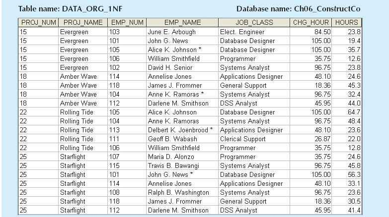
SOURCE: Course Technology/Cengage Learning
Step 2: Identify the Primary Key
The layout in Figure 6.2 represents more than a mere cosmetic change. Even a casual observer will note that PROJ_NUM is not an adequate primary key because the project number does not uniquely identify all of the remaining entity (row) attributes. For example, the PROJ_NUM value 15 can identify any one of five employees. To maintain a proper primary key that will uniquely identify any attribute value, the new key must be composed of a combination of PROJ_NUM and EMP_NUM. For example, using the data shown in Figure 6.2, if you know that PROJ_NUM = 15 and EMP_NUM = 103, the entries for the attributes PROJ_NAME, EMP_NAME, JOB_CLASS, CHG_HOUR, and HOURS must be Evergreen, June E. Arbough, Elect. Engineer, $84.50, and 23.8, respectively.
Step 3: Identify All Dependencies
The identification of the PK in Step 2 means that you have already identified the following dependency:
PROJ_NUM, EMP_NUM → PROJ_NAME, EMP_NAME, JOB_CLASS, CHG_HOUR, HOURS
That is, the PROJ_NAME, EMP_NAME, JOB_CLASS, CHG_HOUR, and HOURS values are all dependent on—that is, they are determined by—the combination of PROJ_NUM and EMP_NUM. There are additional dependencies. For example, the project number identifies (determines) the project name. In other words, the project name is dependent on the project number. You can write that dependency as:
PROJ_NUM → PROJ_NAME
Also, if you know an employee number, you also know that employee’s name, job classification, and charge per hour. Therefore, you can identify the dependency shown next:
EMP_NUM → EMP_NAME, JOB_CLASS, CHG_HOUR
However, given the previous dependency components, you can see that knowing the job classification means knowing the charge per hour for that job classification. In other words, you can identify one last dependency:
JOB_CLASS → CHG_HOUR
This dependency exists between two nonprime attributes; therefore, it is a signal that a transitive dependency exists, and we will refer to it as a transitive dependency. The dependencies you have just examined can also be depicted with the help of the diagram shown in Figure 6.3. Because such a diagram depicts all dependencies found within a given table structure, it is known as a dependency diagram. Dependency diagrams are very helpful in getting a bird’s-eye view of all the relationships among a table’s attributes, and their use makes it less likely that you will overlook an important dependency.
As you examine Figure 6.3, note the following features of a dependency diagram:
1. The primary key attributes are bold, underlined, and shaded in a different color.
2. The arrows above the attributes indicate all desirable dependencies—that is, dependencies based on the primary key. In this case, note that the entity’s attributes are dependent on the combination of PROJ_NUM and EMP_NUM.
3. The arrows below the dependency diagram indicate less desirable dependencies. Two types of such dependencies exist:
a. Partial dependencies. You need to know only the PROJ_NUM to determine the PROJ_NAME; that is, the PROJ_NAME is dependent on only part of the primary key. Also, you need to know only the EMP_NUM to find the EMP_NAME, the JOB_CLASS, and the CHG_HOUR. A dependency based on only a part of a composite primary key is a partial dependency.
b. Transitive dependencies. Note that CHG_HOUR is dependent on JOB_CLASS. Because neither CHG_HOUR nor JOB_CLASS is a prime attribute—that is, neither attribute is at least part of a key—the condition is a transitive dependency. In other words, a transitive dependency is a dependency of one nonprime attribute on another nonprime attribute. The problem with transitive dependencies is that they still yield data anomalies.
FIGURE 6.3 First normal form (1NF) dependency diagram
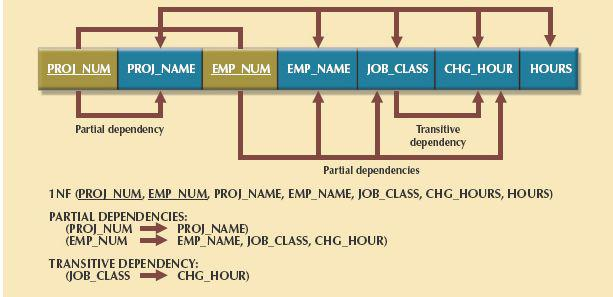
SOURCE: Course Technology/Cengage Learning
Figure 6.3 includes the relational schema for the table in 1NF and a textual notation for each identified dependency.
NOTE
The term first normal form (1NF) describes the tabular format in which:
• All of the key attributes are defined.
• There are no repeating groups in the table. In other words, each row/column intersection contains one and only one value, not a set of values.
• All attributes are dependent on the primary key.
All relational tables satisfy the 1NF requirements. The problem with the 1NF table structure shown in Figure 6.3 is that it contains partial dependencies—that is, dependencies based on only a part of the primary key.
While partial dependencies are sometimes used for performance reasons, they should be used with caution. Such caution is warranted because a table that contains partial dependencies is still subject to data redundancies, and therefore to various anomalies. The data redundancies occur because every row entry requires duplication of data. For example, if Alice K. Johnson submits her work log, then the user would have to make multiple entries during the course of a day. For each entry, the EMP_NAME, JOB_CLASS, and CHG_HOUR must be entered each time, even though the attribute values are identical for each row entered. Such duplication of effort is very inefficient, and it helps create data anomalies; nothing prevents the user from typing slightly different versions of the employee name, the position, or the hourly pay. For instance, the employee name for EMP_NUM = 102 might be entered as Dave Senior or D. Senior. The project name might also be entered correctly as Evergreen or misspelled as Evergeen. Such data anomalies violate the relational database’s integrity and consistency rules.
6.3.2 CONVERSION TO SECOND NORMAL FORM
Conversion to 2NF occurs only when the 1NF has a composite primary key. If the 1NF has a single-attribute primary key, then the table is automatically in 2NF. The 1NF-to-2NF conversion is simple. Starting with the 1NF format displayed in Figure 6.3, you take the following steps:
Step 1: Make New Tables to Eliminate Partial Dependencies
For each component of the primary key that acts as a determinant in a partial dependency, create a new table with a copy of that component as the primary key. While these components are placed in the new tables, it is important that they also remain in the original table as well. The determinants must remain in the original table because they will be the foreign keys for the relationships needed to relate these new tables to the original table. To construct the revised dependency diagram, write each key component on a separate line; then write the original (composite) key on the last line. For example:
PROJ_NUM
EMP_NUM
PROJ_NUM EMP_NUM
Each component will become the key in a new table. In other words, the original table is now divided into three tables (PROJECT, EMPLOYEE, and ASSIGNMENT).
Step 2: Reassign Corresponding Dependent Attributes
Use Figure 6.3 to determine attributes that are dependent in the partial dependencies. The dependencies for the original key components are found by examining the arrows below the dependency diagram shown in Figure 6.3. The attributes that are dependent in a partial dependency are removed from the original table and placed in the new table with the dependency’s determinant. Any attributes that are not dependent in a partial dependency will remain in the original table. In other words, the three tables that result from the conversion to 2NF are given appropriate names (PROJECT, EMPLOYEE, and ASSIGNMENT) and are described by the following relational schemas:
PROJECT (PROJ_NUM, PROJ_NAME)
EMPLOYEE (EMP_NUM, EMP_NAME, JOB_CLASS, CHG_HOUR)
ASSIGNMENT (PROJ_NUM, EMP_NUM, ASSIGN_HOURS)
Because the number of hours spent on each project by each employee is dependent on both PROJ_NUM and EMP_NUM in the ASSIGNMENT table, you leave those hours in the ASSIGNMENT table as ASSIGN_HOURS. Notice that the ASSIGNMENT table contains a composite primary key composed of the attributes PROJ_NUM and EMP_NUM. Notice that by leaving the determinants in the original table as well as making them the primary keys of the new tables, primary key/foreign key relationships have been created. For example, in the EMPLOYEE table, EMP_NUM is the primary key. In the ASSIGNMENT table, EMP_NUM is part of the composite primary key (PROJ_NUM, EMP_NUM) and is a foreign key relating the EMPLOYEE table to the ASSIGNMENT table.
The results of Steps 1 and 2 are displayed in Figure 6.4. At this point, most of the anomalies discussed earlier have been eliminated. For example, if you now want to add, change, or delete a PROJECT record, you need to go only to the PROJECT table and make the change to only one row.
Because a partial dependency can exist only when a table’s primary key is composed of several attributes, a table whose primary key consists of only a single attribute is automatically in 2NF once it is in 1NF.
Figure 6.4 still shows a transitive dependency, which can generate anomalies. For example, if the charge per hour changes for a job classification held by many employees, that change must be made for each of those employees. If you forget to update some of the employee records that are affected by the charge per hour change, different employees with the same job description will generate different hourly charges.
FIGURE 6.4 Second normal form (2NF) conversion results
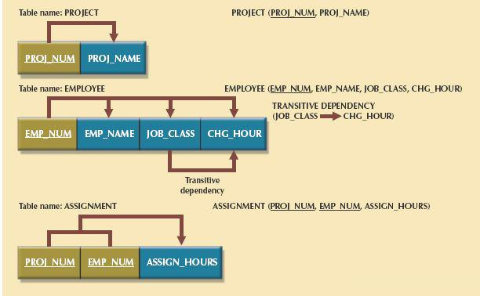
SOURCE: Course Technology/Cengage Learning
NOTE
A table is in second normal form (2NF) when:
• It is in 1NF.
and
• It includes no partial dependencies; that is, no attribute is dependent on only a portion of the primary key.
It is still possible for a table in 2NF to exhibit transitive dependency; that is, the primary key may rely on one or more nonprime attributes to functionally determine other nonprime attributes, as indicated by a functional dependence among the nonprime attributes.
6.3.3 CONVERSION TO THIRD NORMAL FORM
The data anomalies created by the database organization shown in Figure 6.4 are easily eliminated by completing the following two steps:
Step 1: Make New Tables to Eliminate Transitive Dependencies
For every transitive dependency, write a copy of its determinant as a primary key for a new table. A determinant is any attribute whose value determines other values within a row. If you have three different transitive dependencies, you will have three different determinants. As with the conversion to 2NF, it is important for the determinant remain in the original table to serve as a foreign key. Figure 6.4 shows only one table that contains a transitive dependency. Therefore, write the determinant for this transitive dependency as:
JOB_CLASS
Step 2: Reassign Corresponding Dependent Attributes
Using Figure 6.4, identify the attributes that are dependent on each determinant identified in Step 1. Place the dependent attributes in the new tables with their determinants and remove them from their original tables. In this example, eliminate CHG_HOUR from the EMPLOYEE table shown in Figure 6.4 to leave the EMPLOYEE table dependency definition as:
EMP_NUM → EMP_NAME, JOB_CLASS
Draw a new dependency diagram to show all of the tables you have defined in Steps 1 and 2. Name the table to reflect its contents and function. In this case, JOB seems appropriate. Check all of the tables to make sure that each table has a determinant and that no table contains inappropriate dependencies. When you have completed these steps, you will see the results in Figure 6.5.
FIGURE 6.5 Third normal form (3NF) conversion results
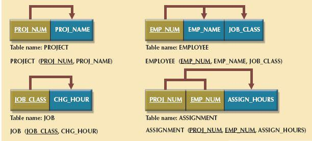
SOURCE: Course Technology/Cengage Learning
In other words, after the 3NF conversion has been completed, your database will contain four tables:
PROJECT (PROJ_NUM, PROJ_NAME)
EMPLOYEE (EMP_NUM, EMP_NAME, JOB_CLASS)
JOB (JOB_CLASS, CHG_HOUR)
ASSIGNMENT (PROJ_NUM, EMP_NUM, ASSIGN_HOURS)
Note that this conversion has eliminated the original EMPLOYEE table’s transitive dependency; the tables are now said to be in third normal form (3NF).
NOTE
A table is in third normal form (3NF) when:
• It is in 2NF.
and
• It contains no transitive dependencies.
It is interesting to note the similarities between resolving 2NF and 3NF problems. To convert a table from 1NF to 2NF, it is necessary to remove the partial dependencies. To convert a table from 2NF to 3NF, it is necessary to remove the transitive dependencies. No matter whether the “problem” dependency is a partial dependency or a transitive dependency, the solution is the same: create a new table for each problem dependency. The determinant of the problem dependency remains in the original table and is placed as the primary key of the new table. The dependents of the problem dependency are removed from the original table and placed as nonprime attributes in the new table.
Be aware, however, that while the technique is the same, it is imperative that 2NF be achieved before moving on to 3NF; be certain to resolve the partial dependencies before resolving the transitive dependencies. Also, recall the assumption that was made at the beginning of the normalization discussion—that each table has only one candidate key, which is the primary key. If a table has multiple candidate keys, then the overall process remains the same, but there are additional considerations.
For example, if a table has multiple candidate keys and one of them is a composite key, the table can have partial dependencies based on this composite candidate key, even when the primary key chosen is a single attribute. In those cases, following the process described above, those dependencies would be perceived as transitive dependencies and would not be resolved until 3NF. The simplified process described above will allow the designer to achieve the correct result, but through practice, you should recognize all candidate keys and their dependencies as such, and resolve them appropriately. The existence of multiple candidate keys can also influence the identification of transitive dependencies. Previously, a transitive dependency was defined to exist when one nonprime attribute determined another nonprime attribute. In the presence of multiple candidate keys, the definition of a nonprime attribute as an attribute that is not a part of any candidate key is critical. If the determinant of a functional dependence is not the primary key but is a part of another candidate key, then it is not a nonprime attribute and does not signal the presence of a transitive dependency.
Now that the table structures have been cleaned up to eliminate the troublesome partial and transitive dependencies, you can focus on improving the database’s ability to provide information and on enhancing its operational characteristics. In the next few paragraphs, you will learn about the various types of issues you need to address to produce a good normalized set of tables. Note that for space issues, each section presents just one example—the designer must apply the principle to all remaining tables in the design. Remember that normalization cannot, by itself, be relied on to make good designs. Instead, normalization is valuable because its use helps eliminate data redundancies.
Evaluate PK Assignments
Each time a new employee is entered into the EMPLOYEE table, a JOB_CLASS value must be entered. Unfortunately, it is too easy to make data-entry errors that lead to referential integrity violations. For example, entering DB Designer instead of Database Designer for the JOB_CLASS attribute in the EMPLOYEE table will trigger such a violation. Therefore, it would be better to add a JOB_CODE attribute to create a unique identifier. The addition of a JOB_CODE attribute produces the following dependency:
JOB_CODE → JOB_CLASS, CHG_HOUR
If you assume that the JOB_CODE is a proper primary key, this new attribute does produce the following dependency:
JOB_CLASS → CHG_HOUR
However, this dependency is not a transitive dependency because the determinant is a candidate key. Further, the presence of JOB_CODE greatly decreases the likelihood of referential integrity violations. Note that the new JOB table now has two candidate keys—JOB_CODE and JOB_CLASS. In this case, JOB_CODE is the chosen primary key as well as a surrogate key. A surrogate key, as you should recall, is an artificial PK introduced by the designer with the purpose of simplifying the assignment of primary keys to tables. Surrogate keys are usually numeric, they are often generated automatically by the DBMS, they are free of semantic content (they have no special meaning), and they are usually hidden from the end users.
Evaluate Naming Conventions
It is best to adhere to the naming conventions outlined in Chapter 2, Data Models. Therefore, CHG_HOUR will be changed to JOB_CHG_HOUR to indicate its association with the JOB table. In addition, the attribute name JOB_CLASS does not quite describe entries such as Systems Analyst, Database Designer, and so on; the label JOB_DESCRIPTION fits the entries better. Also, you might have noticed that HOURS was changed to ASSIGN_HOURS in the conversion from 1NF to 2NF. That change lets you associate the hours worked with the ASSIGNMENT table.
Refine Attribute Atomicity
It is generally good practice to pay attention to the atomicity requirement. An atomic attribute is one that cannot be further subdivided. Such an attribute is said to display atomicity. Clearly, the use of the EMP_NAME in the EMPLOYEE table is not atomic because EMP_NAME can be decomposed into a last name, a first name, and an initial. By improving the degree of atomicity, you also gain querying flexibility. For example, if you use EMP_LNAME, EMP_FNAME, and EMP_INITIAL, you can easily generate phone lists by sorting last names, first names, and initials. Such a task would be very difficult if the name components were within a single attribute. In general, designers prefer to use simple, single-valued attributes, as indicated by the business rules and processing requirements.
Identify New Attributes
If the EMPLOYEE table were used in a real-world environment, several other attributes would have to be added. For example, year-to-date gross salary payments, Social Security payments, and Medicare payments would be desirable. An employee hire date attribute (EMP_HIREDATE) could be used to track an employee’s job longevity, and could serve as a basis for awarding bonuses to long-term employees and for other morale-enhancing measures. The same principle must be applied to all other tables in your design.
Identify New Relationships
According to the original report, the users need to track which employee is acting as the manager of each project. This can be implemented as a relationship between EMPLOYEE and PROJECT. From the original report, it is clear that each project has only one manager. Therefore, the system’s ability to supply detailed information about each project’s manager is ensured by using the EMP_NUM as a foreign key in PROJECT. That action ensures that you can access the details of each PROJECT’s manager data without producing unnecessary and undesirable data duplication. The designer must take care to place the right attributes in the right tables by using normalization principles.
Refine Primary Keys as Required for Data Granularity
Granularity refers to the level of detail represented by the values stored in a table’s row. Data stored at their lowest level of granularity are said to be atomic data, as explained earlier. In Figure 6.5, the ASSIGNMENT table in 3NF uses the ASSIGN_HOURS attribute to represent the hours worked by a given employee on a given project. However, are those values recorded at their lowest level of granularity? In other words, does ASSIGN_HOURS represent the hourly total, daily total, weekly total, monthly total, or yearly total? Clearly, ASSIGN_HOURS requires more careful definition. In this case, the relevant question would be as follows: for what time frame—hour, day, week, month, and so on—do you want to record the ASSIGN_HOURS data?
For example, assume that the combination of EMP_NUM and PROJ_NUM is an acceptable (composite) primary key in the ASSIGNMENT table. That primary key is useful in representing only the total number of hours an employee worked on a project since its start. Using a surrogate primary key such as ASSIGN_NUM provides lower granularity and yields greater flexibility. For example, assume that the EMP_NUM and PROJ_NUM combination is used as the primary key, and then an employee makes two “hours worked” entries in the ASSIGNMENT table. That action violates the entity integrity requirement. Even if you add the ASSIGN_DATE as part of a composite PK, an entity integrity violation is still generated if any employee makes two or more entries for the same project on the same day. (The employee might have worked on the project for a few hours in the morning and then worked on it again later in the day.) The same data entry yields no problems when ASSIGN_NUM is used as the primary key.
NOTE
In an ideal database design, the level of desired granularity would be determined during the conceptual design or while the requirements were being gathered. However, as you have already seen in this chapter, many database designs involve the refinement of existing data requirements, thus triggering design modifications. In a real-world environment, changing granularity requirements might dictate changes in primary key selection, and those changes might ultimately require the use of surrogate keys.
Maintain Historical Accuracy
Writing the job charge per hour into the ASSIGNMENT table is crucial to maintaining the historical accuracy of the table’s data. It would be appropriate to name this attribute ASSIGN_CHG_HOUR. Although this attribute would appear to have the same value as JOB_CHG_HOUR, this is true only if the JOB_CHG_HOUR value remains the same forever. It is reasonable to assume that the job charge per hour will change over time. However, suppose that the charges to each project were calculated and billed by multiplying the hours worked from the ASSIGNMENT table by the charge per hour from the JOB table. Those charges would always show the current charge per hour stored in the JOB table rather than the charge per hour that was in effect at the time of the assignment.
Evaluate Using Derived Attributes
Finally, you can use a derived attribute in the ASSIGNMENT table to store the actual charge made to a project. That derived attribute, named ASSIGN_CHARGE, is the result of multiplying ASSIGN_HOURS by ASSIGN_CHG_HOUR. This creates a transitive dependency such that:
(ASSIGN_CHARGE + ASSIGN_HOURS) → ASSIGN_CHG_HOUR.
From a system functionality point of view, such derived attribute values can be calculated when they are needed to write reports or invoices. However, storing the derived attribute in the table makes it easy to write the application software to produce the desired results. Also, if many transactions must be reported and/or summarized, the availability of the derived attribute will save reporting time. (If the calculation is done at the time of data entry, it will be completed when the end user presses the Enter key, thus speeding up the process.) Review Chapter 4 for a discussion of the implications of storing derived attributes in a database table.
The enhancements described in the preceding sections are illustrated in the tables and dependency diagrams shown in Figure 6.6.
FIGURE 6.6 The completed database
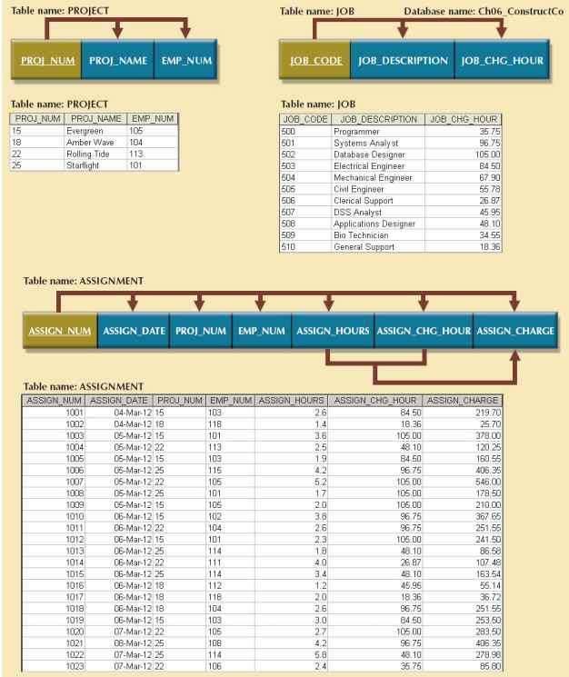
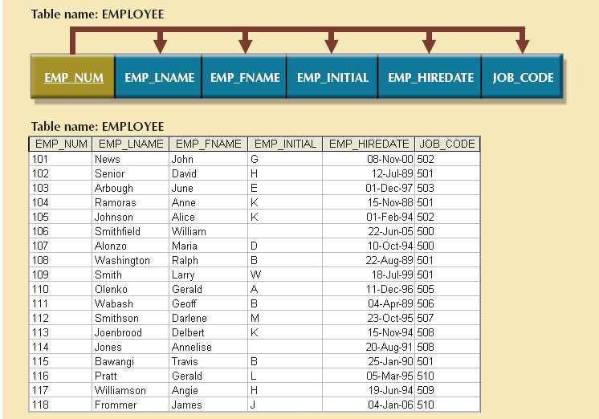
SOURCE: Course Technology/Cengage Learning
Figure 6.6 is a vast improvement over the original database design. If the application software is designed properly, the most active table (ASSIGNMENT) requires the entry of only the PROJ_NUM, EMP_NUM, and ASSIGN_HOURS values. The values for the attributes ASSIGN_NUM and ASSIGN_DATE can be generated by the application. For example, the ASSIGN_NUM can be created by using a counter, and the ASSIGN_DATE can be the system date read by the application and automatically entered into the ASSIGNMENT table. In addition, the application software can automatically insert the correct ASSIGN_CHG_HOUR value by writing the appropriate JOB table’s JOB_CHG_HOUR value into the ASSIGNMENT table. (The JOB and ASSIGNMENT tables are related through the JOB_CODE attribute.) If the JOB table’s JOB_CHG_HOUR value changes, the next insertion of that value into the ASSIGNMENT table will reflect the change automatically. The table structure thus minimizes the need for human intervention. In fact, if the system requires the employees to enter their own work hours, they can scan their EMP_NUM into the ASSIGNMENT table by using a magnetic card reader that enters their identity. Thus, the ASSIGNMENT table’s structure can set the stage for maintaining some desired level of security.
6.5 SURROGATE KEY CONSIDERATIONS
Although this design meets the vital entity and referential integrity requirements, the designer must still address some concerns. For example, a composite primary key might become too cumbersome to use as the number of attributes grows. (It becomes difficult to create a suitable foreign key when the related table uses a composite primary key. In addition, a composite primary key makes it more difficult to write search routines.) Or, a primary key attribute might simply have too much descriptive content to be usable—which is why the JOB_CODE attribute was added to the JOB table to serve as its primary key. When the primary key is considered to be unsuitable for some reason, designers use surrogate keys, as discussed in the previous chapter.
At the implementation level, a surrogate key is a system-defined attribute generally created and managed via the DBMS. Usually, a system-defined surrogate key is numeric, and its value is automatically incremented for each new row. For example, Microsoft Access uses an AutoNumber data type, Microsoft SQL Server uses an identity column, and Oracle uses a sequence object.
Recall from Section 6.4 that the JOB_CODE attribute was designated to be the JOB table’s primary key. However, remember that the JOB_CODE attribute does not prevent duplicate entries, as shown in the JOB table in Table 6.4.
TABLE 6.4 Duplicate Entries in the JOB Table
JOB_CODE | JOB_DESCRIPTION | JOB_CHG_HOUR |
511 | Programmer | $35.75 |
512 | Programmer | $35.75 |
Clearly, the data entries in Table 6.4 are inappropriate because they duplicate existing records—yet there has been no violation of either entity integrity or referential integrity. This problem of multiple duplicate records was created when the JOB_CODE attribute was added as the PK. (When the JOB_DESCRIPTION was initially designated to be the PK, the DBMS would ensure unique values for all job description entries when it was asked to enforce entity integrity. However, that option created the problems that caused the use of the JOB_CODE attribute in the first place!) In any case, if JOB_CODE is to be the surrogate PK, you still must ensure the existence of unique values in the JOB_DESCRIPTION through the use of a unique index.
Note that all of the remaining tables (PROJECT, ASSIGNMENT, and EMPLOYEE) are subject to the same limitations. For example, if you use the EMP_NUM attribute in the EMPLOYEE table as the PK, you can make multiple entries for the same employee. To avoid that problem, you might create a unique index for EMP_LNAME, EMP_FNAME, and EMP_INITIAL, but how would you then deal with two employees named Joe B. Smith? In that case, you might use another (preferably externally defined) attribute to serve as the basis for a unique index.
It is worth repeating that database design often involves trade-offs and the exercise of professional judgment. In a real-world environment, you must strike a balance between design integrity and flexibility. For example, you might design the ASSIGNMENT table to use a unique index on PROJ_NUM, EMP_NUM, and ASSIGN_DATE if you want to limit an employee to only one ASSIGN_HOURS entry per date. That limitation would ensure that employees could not enter the same hours multiple times for any given date. Unfortunately, that limitation is likely to be undesirable from a managerial point of view. After all, if an employee works several different times on a project during any given day, it must be possible to make multiple entries for that same employee and the same project during that day. In that case, the best solution might be to add a new externally defined attribute—such as a stub, voucher, or ticket number—to ensure uniqueness. In any case, frequent data audits would be appropriate.
Tables in 3NF will perform suitably in business transactional databases. However, higher normal forms are sometimes useful. In this section, you will learn about a special case of 3NF, known as Boyce-Codd normal form, and about fourth normal form (4NF).
6.6.1 THE BOYCE-CODD NORMAL FORM
A table is in Boyce-Codd normal form (BCNF) when every determinant in the table is a candidate key. (Recall from Chapter 3 that a candidate key has the same characteristics as a primary key, but for some reason, it was not chosen to be the primary key.) Clearly, when a table contains only one candidate key, the 3NF and the BCNF are equivalent. In other words, BCNF can be violated only when the table contains more than one candidate key.
NOTE
A table is in Boyce-Codd normal form (BCNF) when every determinant in the table is a candidate key.
Most designers consider the BCNF to be a special case of the 3NF. In fact, if the techniques shown in this chapter are used, most tables conform to the BCNF requirements once the 3NF is reached. So, how can a table be in 3NF and not be in BCNF? To answer that question, you must keep in mind that a transitive dependency exists when one nonprime attribute is dependent on another nonprime attribute.
In other words, a table is in 3NF when it is in 2NF and there are no transitive dependencies, but what about a case in which a nonkey attribute is the determinant of a key attribute? That condition does not violate 3NF, yet it fails to meet the BCNF requirements (see Figure 6.7) because BCNF requires that every determinant in the table be a candidate key.
FIGURE 6.7 A table that is in 3NF but not in BCNF
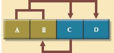
SOURCE: Course Technology/Cengage Learning
Note these functional dependencies in Figure 6.7:
A + B → C, D
A + C → B, D
C → B
Notice that this structure has two candidate keys: (A + B) and (A + C). The table structure shown in Figure 6.7 has no partial dependencies, nor does it contain transitive dependencies. (The condition C → B indicates that a nonkey attribute determines part of the primary key— and that dependency is not transitive or partial because the dependent is a prime attribute!) Thus, the table structure in Figure 6.7 meets the 3NF requirements, although the condition C → B causes the table to fail to meet the BCNF requirements.
To convert the table structure in Figure 6.7 into table structures that are in 3NF and in BCNF, first change the primary key to A + C. This change is appropriate because the dependency C → B means that C is effectively a superset of B. At this point, the table is in 1NF because it contains a partial dependency, C → B. Next, follow the standard decomposition procedures to produce the results shown in Figure 6.8.
To see how this procedure can be applied to an actual problem, examine the sample data in Table 6.5.
TABLE 6.5 Sample Data for a BCNF Conversion
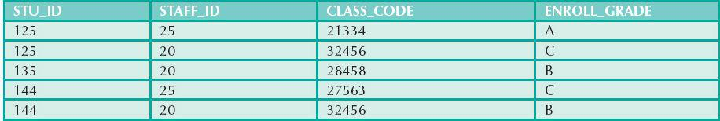
FIGURE 6.8 Decomposition to BCNF
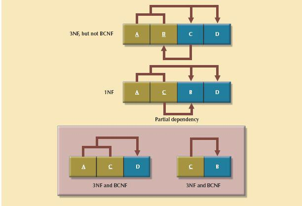
SOURCE: Course Technology/Cengage Learning
Table 6.5 reflects the following conditions:
• Each CLASS_CODE identifies a class uniquely. This condition illustrates the case in which a course might generate many classes. For example, a course labeled INFS 420 might be taught in two classes (sections), each identified by a unique code to facilitate registration. Thus, the CLASS_CODE 32456 might identify INFS 420, class section 1, while the CLASS_CODE 32457 might identify INFS 420, class section 2. Or, the CLASS_CODE 28458 might identify QM 362, class section 5.
• A student can take many classes. Note, for example, that student 125 has taken both 21334 and 32456, earning the grades A and C, respectively.
• A staff member can teach many classes, but each class is taught by only one staff member. Note that staff member 20 teaches the classes identified as 32456 and 28458.
The structure shown in Table 6.5 is reflected in Panel A of Figure 6.9:
STU_ID + STAFF_ID → CLASS_CODE, ENROLL_GRADE
CLASS_CODE → STAFF_ID
Panel A of Figure 6.9 shows a structure that is clearly in 3NF, but the table represented by this structure has a major problem because it is trying to describe two things: staff assignments to classes and student enrollment information. Such a dual-purpose table structure will cause anomalies. For example, if a different staff member is assigned to teach class 32456, two rows will require updates, thus producing an update anomaly. Also, if student 135 drops class 28458, information about who taught that class is lost, thus producing a deletion anomaly. The solution to the problem is to decompose the table structure, following the procedure outlined earlier. The decomposition of Panel B shown in Figure 6.9 yields two table structures that conform to both 3NF and BCNF requirements.
FIGURE 6.9 Another BCNF decomposition
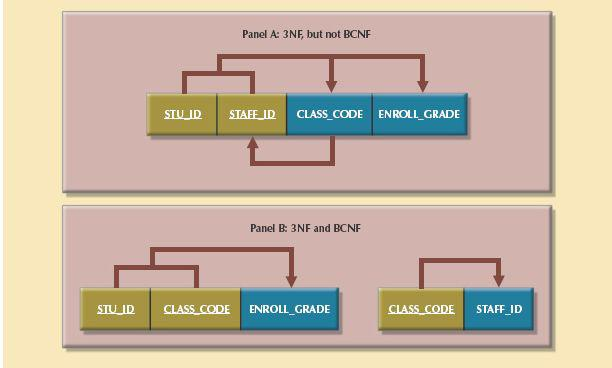
SOURCE: Course Technology/Cengage Learning
Remember that a table is in BCNF when every determinant in that table is a candidate key. Therefore, when a table contains only one candidate key, 3NF and BCNF are equivalent.
6.6.2 FOURTH NORMAL FORM (4NF)
You might encounter poorly designed databases, or you might be asked to convert spreadsheets into a database format in which multiple multivalued attributes exist. For example, consider the possibility that an employee can have multiple assignments and can also be involved in multiple service organizations. Suppose employee 10123 does volunteer work for the Red Cross and United Way. In addition, the same employee might be assigned to work on three projects: 1, 3, and 4. Figure 6.10 illustrates how that set of facts can be recorded in very different ways.
FIGURE 6.10 Tables with multivalued dependencies
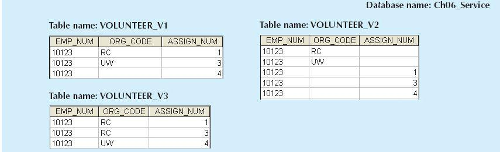
SOURCE: Course Technology/Cengage Learning
There is a problem with the tables in Figure 6.10. The attributes ORG_CODE and ASSIGN_NUM each may have many different values. In normalization terminology, this situation is referred to as a multivalued dependency, which occurs when one key determines multiple values of two other attributes and those attributes are independent of each other. (One employee can have many service entries and many assignment entries. Therefore, one EMP_NUM can determine multiple values of ORG_CODE and multiple values of ASSIGN_NUM; however, ORG_CODE and ASSIGN_NUM are independent of each other.) The presence of a multivalued dependency means that if table versions 1 and 2 are implemented, the tables are likely to contain quite a few null values; in fact, the tables do not even have a viable candidate key. (The EMP_NUM values are not unique, so they cannot be PKs. No combination of the attributes in table versions 1 and 2 can be used to create a PK because some of them contain nulls.) Such a condition is not desirable, especially when there are thousands of employees, many of whom may have multiple job assignments and many service activities. Version 3 at least has a PK, but it is composed of all the attributes in the table. In fact, version 3 meets 3NF requirements, yet it contains many redundancies that are clearly undesirable.
The solution is to eliminate the problems caused by the multivalued dependency. You do this by creating new tables for the components of the multivalued dependency. In this example, the multivalued dependency is resolved and eliminated by creating the ASSIGNMENT and SERVICE_V1 tables depicted in Figure 6.11. Those tables are said to be in 4NF.
If you follow the proper design procedures illustrated in this book, you should not encounter the problem shown in Figure 6.10. Specifically, the discussion of 4NF is largely academic if you make sure that your tables conform to the following two rules:
1. All attributes must be dependent on the primary key, but they must be independent of each other.
2. No row may contain two or more multivalued facts about an entity.
NOTE
A table is in fourth normal form (4NF) when it is in 3NF and has no multivalued dependencies.
FIGURE 6.11 A set of tables in 4NF
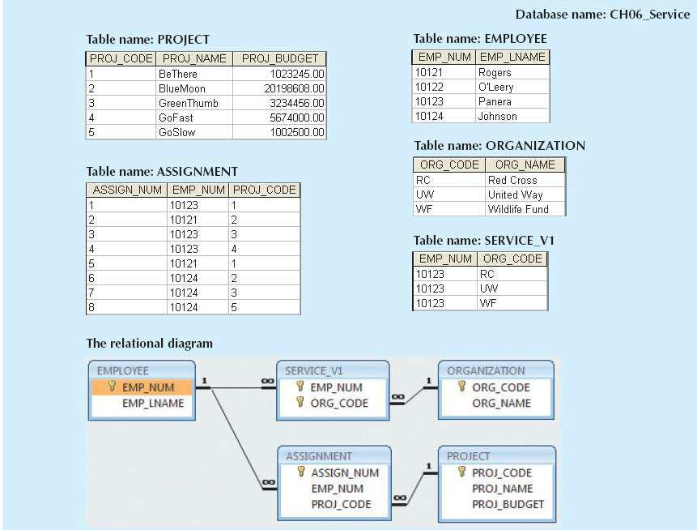
SOURCE: Course Technology/Cengage Learning
6.7 NORMALIZATION AND DATABASE DESIGN
The tables shown in Figure 6.6 illustrate how normalization procedures can be used to produce good tables from poor ones. You will likely have ample opportunity to put this skill into practice when you begin to work with real-world databases. Normalization should be part of the design process. Therefore, make sure that proposed entities meet the required normal form before the table structures are created. Keep in mind that if you follow the design procedures discussed in Chapters 3 and 4, the likelihood of data anomalies will be small. However, even the best database designers are known to make occasional mistakes that come to light during normalization checks. Also, many of the real-world databases you encounter will have been improperly designed or burdened with anomalies if they were improperly modified over the course of time. That means you might be asked to redesign and modify existing databases that are, in effect, anomaly traps. Therefore, you should be aware of good design principles and procedures as well as normalization procedures.
First, an ERD is created through an iterative process. You begin by identifying relevant entities, their attributes, and their relationships. Then you use the results to identify additional entities and attributes. The ERD provides the big picture, or macro view, of an organization’s data requirements and operations.
Second, normalization focuses on the characteristics of specific entities; that is, normalization represents a micro view of the entities within the ERD. Also, as you learned in the previous sections of this chapter, the normalization process might yield additional entities and attributes to be incorporated into the ERD. Therefore, it is difficult to separate normalization from ER modeling; the two techniques are used in an iterative and incremental process.
To understand the proper role of normalization in the design process, you should reexamine the operations of the contracting company whose tables were normalized in the preceding sections. Those operations can be summarized by using the following business rules:
• The company manages many projects.
• Each project requires the services of many employees.
• An employee may be assigned to several different projects.
• Some employees are not assigned to a project and perform duties not specifically related to a project. Some employees are part of a labor pool, to be shared by all project teams. For example, the company’s executive secretary would not be assigned to any one particular project.
• Each employee has a single primary job classification, which determines the hourly billing rate.
• Many employees can have the same job classification. For example, the company employs more than one electrical engineer.
Given that simple description of the company’s operations, two entities and their attributes are initially defined:
• PROJECT (PROJ_NUM, PROJ_NAME)
• EMPLOYEE (EMP_NUM, EMP_LNAME, EMP_FNAME, EMP_INITIAL, JOB_DESCRIPTION, JOB_CHG_HOUR)
Those two entities constitute the initial ERD shown in Figure 6.12.
FIGURE 6.12 Initial contracting company ERD
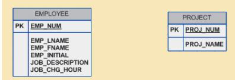
SOURCE: Course Technology/Cengage Learning
After creating the initial ERD shown in Figure 6.12, the normal forms are defined:
• PROJECT is in 3NF and needs no modification at this point.
• EMPLOYEE requires additional scrutiny. The JOB_DESCRIPTION attribute defines job classifications such as Systems Analyst, Database Designer, and Programmer. In turn, those classifications determine the billing rate, JOB_CHG_HOUR. Therefore, EMPLOYEE contains a transitive dependency.
The removal of EMPLOYEE’s transitive dependency yields three entities:
• PROJECT (PROJ_NUM, PROJ_NAME)
• EMPLOYEE (EMP_NUM, EMP_LNAME, EMP_FNAME, EMP_INITIAL, JOB_CODE)
• JOB (JOB_CODE, JOB_DESCRIPTION, JOB_CHG_HOUR)
Because the normalization process yields an additional entity (JOB), the initial ERD is modified as shown in Figure 6.13.
To represent the M:N relationship between EMPLOYEE and PROJECT, you might think that two 1:M relationships could be used—an employee can be assigned to many projects, and each project can have many employees assigned to it. (See Figure 6.14.) Unfortunately, that representation yields a design that cannot be correctly implemented.
Because the M:N relationship between EMPLOYEE and PROJECT cannot be implemented, the ERD in Figure 6.14 must be modified to include the ASSIGNMENT entity to track the assignment of employees to projects, thus yielding the ERD shown in Figure 6.15. The ASSIGNMENT entity in Figure 6.15 uses the primary keys from the entities PROJECT and EMPLOYEE to serve as its foreign keys. However, note that in this implementation, the ASSIGNMENT entity’s surrogate primary key is ASSIGN_NUM, to avoid the use of a composite primary key. Therefore, the “enters” relationship between EMPLOYEE and ASSIGNMENT and the “requires” relationship between PROJECT and ASSIGNMENT are shown as weak or non-identifying.
FIGURE 6.13 Modified contracting company ERD
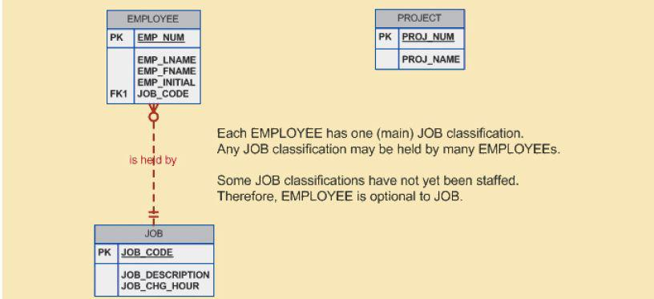
SOURCE: Course Technology/Cengage Learning
FIGURE 6.14 Incorrect M:N relationship representation
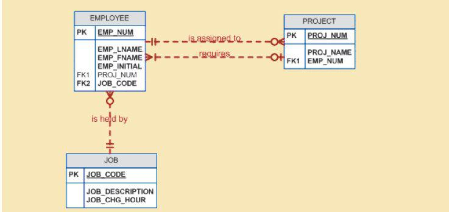
SOURCE: Course Technology/Cengage Learning
FIGURE 6.15 Final contracting company ERD
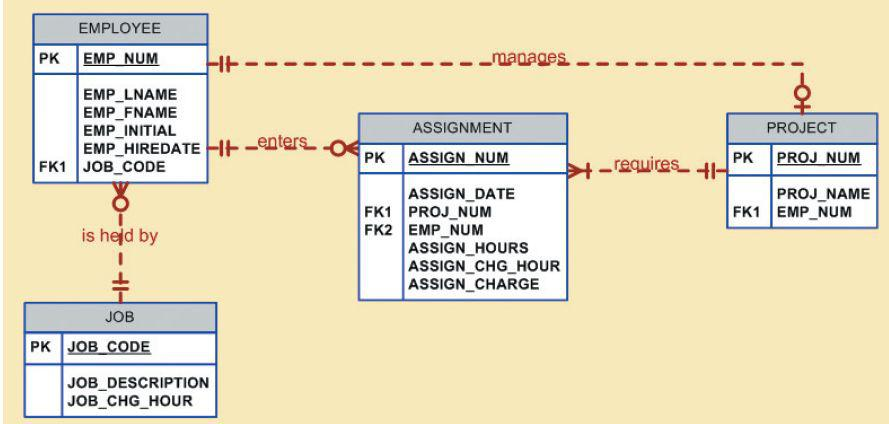
SOURCE: Course Technology/Cengage Learning
In Figure 6.15, the ASSIGN_HOURS attribute is assigned to the composite entity named ASSIGNMENT. Because you will likely need detailed information about each project’s manager, the creation of a “manages” relationship is useful. The “manages” relationship is implemented through the foreign key in PROJECT. Finally, some additional attributes may be created to improve the system’s ability to generate additional information. For example, you may want to include the date the employee was hired (EMP_HIREDATE) to keep track of worker longevity. Based on this last modification, the model should include four entities and their attributes:
PROJECT (PROJ_NUM, PROJ_NAME, EMP_NUM)
EMPLOYEE (EMP_NUM, EMP_LNAME, EMP_FNAME, EMP_INITIAL, EMP_HIREDATE, JOB_CODE)
JOB (JOB_CODE, JOB_DESCRIPTION, JOB_CHG_HOUR)
ASSIGNMENT (ASSIGN_NUM, ASSIGN_DATE, PROJ_NUM, EMP_NUM, ASSIGN_HOURS, ASSIGN_CHG_ HOUR, ASSIGN_CHARGE)
The design process is now on the right track. The ERD represents the operations accurately, and the entities now reflect their conformance to 3NF. The combination of normalization and ER modeling yields a useful ERD, whose entities may now be translated into appropriate table structures. In Figure 6.15, note that PROJECT is optional to EMPLOYEE in the “manages” relationship. This optionality exists because not all employees manage projects. The final database contents are shown in Figure 6.16.
FIGURE 6.16 The implemented database
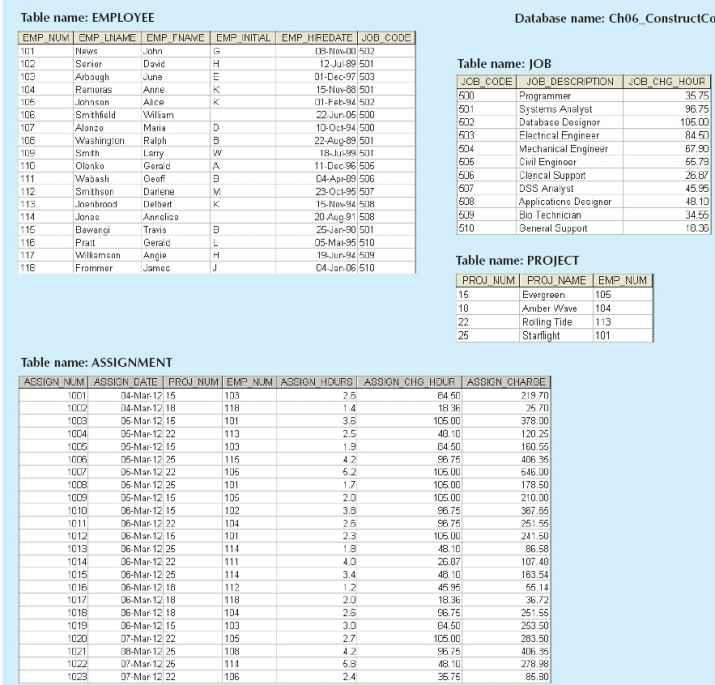
SOURCE: Course Technology/Cengage Learning
It is important to remember that the optimal relational database implementation requires that all tables be at least in third normal form (3NF). A good relational DBMS excels at managing normalized relations—that is, relations void of any unnecessary redundancies that might cause data anomalies. Although the creation of normalized relations is an important database design goal, it is only one of many such goals. Good database design also considers processing (or reporting) requirements and processing speed. The problem with normalization is that as tables are decomposed to conform to normalization requirements, the number of database tables expands. Therefore, in order to generate information, data must be put together from various tables. Joining a large number of tables takes additional input/ output (I/O) operations and processing logic, thereby reducing system speed. Most relational database systems are able to handle joins very efficiently. However, rare and occasional circumstances may allow some degree of denormalization so processing speed can be increased.
Keep in mind that the advantage of higher processing speed must be carefully weighed against the disadvantage of data anomalies. On the other hand, some anomalies are of only theoretical interest. For example, should people in a real-world database environment worry that a ZIP_CODE determines CITY in a CUSTOMER table whose primary key is the customer number? Is it really practical to produce a separate table for
ZIP (ZIP_CODE, CITY)
to eliminate a transitive dependency from the CUSTOMER table? (Perhaps your answer to that question changes if you are in the business of producing mailing lists.) As explained earlier, the problem with denormalized relations and redundant data is that data integrity could be compromised due to the possibility of insert, update, and deletion anomalies. The advice is simple: use common sense during the normalization process.
Furthermore, the database design process could, in some cases, introduce some small degree of redundant data in the model, as seen in the previous example. This, in effect, creates “denormalized” relations. Table 6.6 shows some common examples of data redundancy that are generally found in database implementations.
TABLE 6.6 Common Denormalization Examples
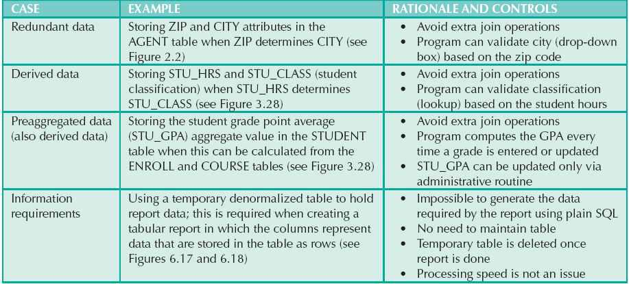
A more comprehensive example of the need for denormalization due to reporting requirements is the case of a faculty evaluation report in which each row lists the scores obtained during the last four semesters taught. (See Figure 6.17.)
FIGURE 6.17 The faculty evaluation report
SOURCE: Course Technology/Cengage Learning
Although this report seems simple enough, the problem is that the data are stored in a normalized table in which each row represents a different score for a given faculty member in a given semester. (See Figure 6.18.)
FIGURE 6.18 The EVALDATA and FACHIST tables
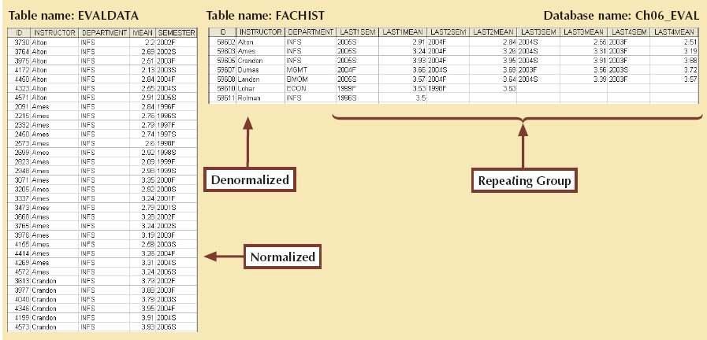
SOURCE: Course Technology/Cengage Learning
The difficulty of transposing multirow data to multicolumn data is compounded by the fact that the last four semesters taught are not necessarily the same for all faculty members. Some might have taken sabbaticals, some might have had research appointments, some might be new faculty with only two semesters on the job, and so on. To generate this report, the two tables in Figure 6.18 were used. The EVALDATA table is the master data table containing the evaluation scores for each faculty member for each semester taught; this table is normalized. The FACHIST table contains the last four data points—that is, evaluation score and semester—for each faculty member. The FACHIST table is a temporary denormalized table created from the EVALDATA table via a series of queries. (The FACHIST table is the basis for the report shown in Figure 6.17.)
As shown in the faculty evaluation report, the conflicts between design efficiency, information requirements, and performance are often resolved through compromises that may include denormalization. In this case, and assuming there is enough storage space, the designer’s choices could be narrowed down to:
• Store the data in a permanent denormalized table. This is not the recommended solution, because the denormalized table is subject to data anomalies (insert, update, and delete). This solution is viable only if performance is an issue.
• Create a temporary denormalized table from the permanent normalized table(s). The denormalized table exists only as long as it takes to generate the report; it disappears after the report is produced. Therefore, there are no data anomaly problems. This solution is practical only if performance is not an issue and there are no other viable processing options.
As shown, normalization purity is often difficult to sustain in the modern database environment. You will learn in Chapter 13, Business Intelligence and Data Warehouses, that lower normalization forms occur (and are even required) in specialized databases known as data warehouses. Such specialized databases reflect the ever-growing demand for greater scope and depth in the data on which decision support systems increasingly rely. You will discover that the data warehouse routinely uses 2NF structures in its complex, multilevel, multisource data environment. In short, although normalization is very important, especially in the so-called production database environment, 2NF is no longer disregarded as it once was.
Although 2NF tables cannot always be avoided, the problem of working with tables that contain partial and/or transitive dependencies in a production database environment should not be minimized. Aside from the possibility of troublesome data anomalies being created, unnormalized tables in a production database tend to suffer from these defects:
• Data updates are less efficient because programs that read and update tables must deal with larger tables.
• Indexing is more cumbersome. It is simply not practical to build all of the indexes required for the many attributes that might be located in a single unnormalized table.
• Unnormalized tables yield no simple strategies for creating virtual tables known as views. You will learn how to create and use views in Chapter 8, Advanced SQL.
Remember that good design cannot be created in the application programs that use a database. Also keep in mind that unnormalized database tables often lead to various data redundancy disasters in production databases, such as the problems examined thus far. In other words, use denormalization cautiously and make sure that you can explain why the unnormalized tables are a better choice in certain situations than their normalized counterparts.
In the chapters of Part II, you have learned how data modeling translates a specific real-world environment into a data model that represents the real-world data, users, processes, and interactions. The modeling techniques you have learned thus far give you the tools needed to produce successful database designs. However, just as any good pilot uses a checklist to ensure that all is in order for a successful flight, the data-modeling checklist shown in Table 6.7 will help ensure that you perform data-modeling tasks successfully based on the concepts and tools you have learned in this text.
NOTE
You can also find this data-modeling checklist on the inside front cover of this book for easy reference.
TABLE 6.7 Data-Modeling Checklist
BUSINESS RULES
• Properly document and verify all business rules with the end users.
• Ensure that all business rules are written precisely, clearly, and simply. The business rules must help identify entities, attributes, relationships, and constraints.
• Identify the source of all business rules, and ensure that each business rule is justified, dated, and signed off by an approving authority.
DATA MODELING
Naming conventions: All names should be limited in length (database-dependent size).
• Entity names:
• Should be nouns that are familiar to business and should be short and meaningful
• Should document abbreviations, synonyms, and aliases for each entity
• Should be unique within the model
• For composite entities, may include a combination of abbreviated names of the entities linked through the composite entity
• Attribute names:
• Should be unique within the entity
• Should use the entity abbreviation as a prefix
• Should be descriptive of the characteristic
• Should use suffixes such as _ID, _NUM, or _CODE for the PK attribute
• Should not be a reserved word
• Should not contain spaces or special characters such as @, !, or &
• Relationship names:
• Should be active or passive verbs that clearly indicate the nature of the relationship
Entities:
• Each entity should represent a single subject.
• Each entity should represent a set of distinguishable entity instances.
• All entities should be in 3NF or higher. Any entities below 3NF should be justified.
• The granularity of the entity instance should be clearly defined.
• The PK should be clearly defined and support the selected data granularity.
Attributes:
• Should be simple and single-valued (atomic data)
• Should document default values, constraints, synonyms, and aliases
• Derived attributes should be clearly identified and include source(s)
• Should not be redundant unless this is required for transaction accuracy, performance, or maintaining a history
• Nonkey attributes must be fully dependent on the PK attribute
Relationships:
• Should clearly identify relationship participants
• Should clearly define participation, connectivity, and document cardinality
ER model:
• Should be validated against expected processes: inserts, updates, and deletes
• Should evaluate where, when, and how to maintain a history
• Should not contain redundant relationships except as required (see attributes)
• Should minimize data redundancy to ensure single-place updates
• Should conform to the minimal data rule: All that is needed is there, and all that is there is needed.
 Normalization is a technique used to design tables in which data redundancies are minimized. The first three normal forms (1NF, 2NF, and 3NF) are the most common. From a structural point of view, higher normal forms are better than lower normal forms, because higher normal forms yield relatively fewer data redundancies in the database. Almost all business designs use 3NF as the ideal normal form. A special, more restricted 3NF known as Boyce-Codd normal form, or BCNF, is also used.
Normalization is a technique used to design tables in which data redundancies are minimized. The first three normal forms (1NF, 2NF, and 3NF) are the most common. From a structural point of view, higher normal forms are better than lower normal forms, because higher normal forms yield relatively fewer data redundancies in the database. Almost all business designs use 3NF as the ideal normal form. A special, more restricted 3NF known as Boyce-Codd normal form, or BCNF, is also used.
A table is in 1NF when all key attributes are defined and all remaining attributes are dependent on the primary key. However, a table in 1NF can still contain both partial and transitive dependencies. A partial dependency is one in which an attribute is functionally dependent on only a part of a multiattribute primary key. A transitive dependency is one in which an attribute is functionally dependent on another nonkey attribute. A table with a single-attribute primary key cannot exhibit partial dependencies.
A table is in 2NF when it is in 1NF and contains no partial dependencies. Therefore, a 1NF table is automatically in 2NF when its primary key is based on only a single attribute. A table in 2NF may still contain transitive dependencies.
A table is in 3NF when it is in 2NF and contains no transitive dependencies. Given that definition, the Boyce-Codd normal form (BCNF) is merely a special 3NF case in which all determinant keys are candidate keys. When a table has only a single candidate key, a 3NF table is automatically in BCNF.
A table that is not in 3NF may be split into new tables until all of the tables meet the 3NF requirements.
Normalization is an important part—but only a part—of the design process. As entities and attributes are defined during the ER modeling process, subject each entity (set) to normalization checks and form new entities (sets) as required. Incorporate the normalized entities into the ERD and continue the iterative ER process until all entities and their attributes are defined and all equivalent tables are in 3NF.
A table in 3NF might contain multivalued dependencies that produce either numerous null values or redundant data. Therefore, it might be necessary to convert a 3NF table to the fourth normal form (4NF) by splitting the table to remove the multivalued dependencies. Thus, a table is in 4NF when it is in 3NF and contains no multivalued dependencies.
The larger the number of tables, the more additional I/O operations and processing logic you need to join them. Therefore, tables are sometimes denormalized to yield less I/O in order to increase processing speed. Unfortunately, with larger tables, you pay for the increased processing speed by making the data updates less efficient, by making indexing more cumbersome, and by introducing data redundancies that are likely to yield data anomalies. In the design of production databases, use denormalization sparingly and cautiously.
The data-modeling checklist provides a way for the designer to check that the ERD meets a set of minimum requirements.
ONLINE CONTENT
Flashcards and crossword puzzles for key term practice are available at www.cengagebrain.com.
1. What is normalization?
2. When is a table in 1NF?
3. When is a table in 2NF?
4. When is a table in 3NF?
5. When is a table in BCNF?
6. Given the dependency diagram shown in Figure Q6.6, answer Items 6a-6c.
FIGURE Q6.6 Dependency diagram for Question 6
SOURCE: Course Technology/Cengage Learning
a. Identify and discuss each of the indicated dependencies.
b. Create a database whose tables are at least in 2NF, showing the dependency diagrams for each table.
c. Create a database whose tables are at least in 3NF, showing the dependency diagrams for each table.
7. The dependency diagram in Figure Q6.7 indicates that authors are paid royalties for each book they write for a publisher. The amount of the royalty can vary by author, by book, and by edition of the book.
FIGURE Q6.7 Book royalty dependency diagram
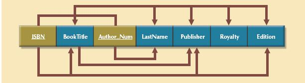
SOURCE: Course Technology/Cengage Learning
a. Based on the dependency diagram, create a database whose tables are at least in 2NF, showing the dependency diagram for each table.
b. Create a database whose tables are at least in 3NF, showing the dependency diagram for each table.
8. The dependency diagram in Figure Q6.8 indicates that a patient can receive many prescriptions for one or more medicines over time. Based on the dependency diagram, create a database whose tables are in at least 2NF, showing the dependency diagram for each table.
FIGURE Q6.8 Prescription dependency diagram
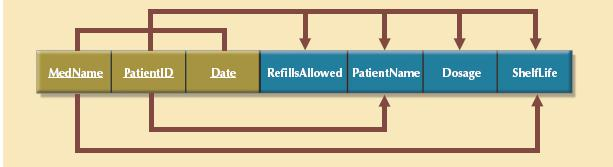
SOURCE: Course Technology/Cengage Learning
9. What is a partial dependency? With what normal form is it associated?
10. What three data anomalies are likely to be the result of data redundancy? How can such anomalies be eliminated?
11. Define and discuss the concept of transitive dependency.
12. What is a surrogate key, and when should you use one?
13. Why is a table whose primary key consists of a single attribute automatically in 2NF when it is in 1NF?
14. How would you describe a condition in which one attribute is dependent on another attribute when neither attribute is part of the primary key?
15. Suppose someone tells you that an attribute that is part of a composite primary key is also a candidate key. How would you respond to that statement?
16. A table is in _____________ normal form when it is in ________________ and there are no transitive dependencies.
1. Using the descriptions of the attributes given in the figure, convert the ERD shown in Figure P6.1 into a dependency diagram that is in at least 3NF.
FIGURE P6.1 Appointment ERD for Problem 1
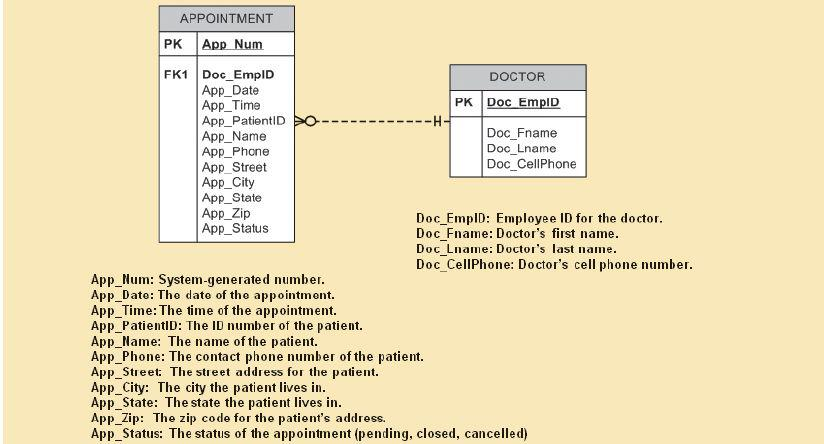
SOURCE: Course Technology/Cengage Learning
2. Using the descriptions of the attributes given in the figure, convert the ERD shown in Figure P6.2 into a dependency diagram that is in at least 3NF.
FIGURE Presentation ERD for Problem 2
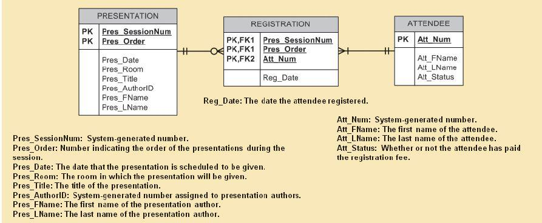
SOURCE: Course Technology/Cengage Learning
3. Using the INVOICE table structure shown in Table P6.3, do the following:
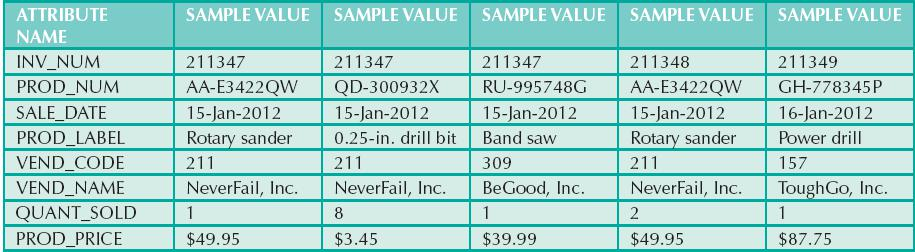
a. Write the relational schema, draw its dependency diagram, and identify all dependencies, including all partial and transitive dependencies. You can assume that the table does not contain repeating groups and that an invoice number references more than one product. (Hint: This table uses a composite primary key.)
b. Remove all partial dependencies, write the relational schema, and draw the new dependency diagrams. Identify the normal forms for each table structure you created.
NOTE
You can assume that any given product is supplied by a single vendor, but a vendor can supply many products. Therefore, it is proper to conclude that the following dependency exists:
PROD_NUM → PROD_LABEL, PROD_PRICE, VEND_CODE, VEND_NAME
(Hint: Your actions should produce three dependency diagrams.)
c. Remove all transitive dependencies, write the relational schema, and draw the new dependency diagrams. Also identify the normal forms for each table structure you created.
d. Draw the Crow’s Foot ERD.
4. Using the STUDENT table structure shown in Table P6.4, do the following:
a. Write the relational schema and draw its dependency diagram. Identify all dependencies, including all transitive dependencies.
b. Write the relational schema and draw the dependency diagram to meet the 3NF requirements to the greatest practical extent possible. If you believe that practical considerations dictate using a 2NF structure, explain why your decision to retain 2NF is appropriate. If necessary, add or modify attributes to create appropriate determinants and to adhere to the naming conventions.
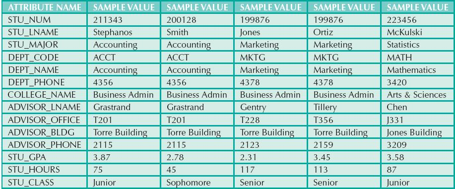
c. Using the results of Problem 4, draw the Crow’s Foot ERD.
NOTE
Although the completed student hours (STU_HOURS) do determine the student classification (STU_CLASS), this dependency is not as obvious as you might initially assume it to be. For example, a student is considered a junior if the student has completed between 61 and 90 credit hours.
5. To keep track of office furniture, computers, printers, and other office equipment, the FOUNDIT Company uses the table structure shown in Table P6.5.
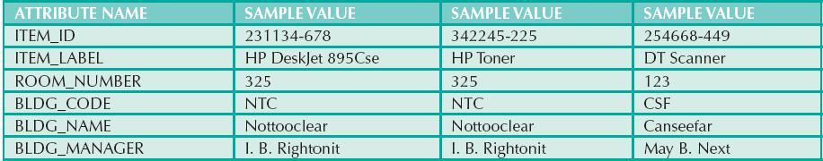
a. Given that information, write the relational schema and draw the dependency diagram. Make sure that you label the transitive and/or partial dependencies.
b. Write the relational schema and create a set of dependency diagrams that meet 3NF requirements. Rename attributes to meet the naming conventions, and create new entities and attributes as necessary.
6. The table structure shown in Table P6.6 contains many unsatisfactory components and characteristics. For example, there are several multivalued attributes, naming conventions are violated, and some attributes are not atomic.
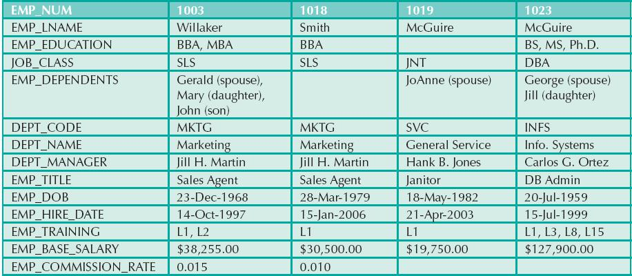
a. Given the structure shown in Table P6.6, write the relational schema and draw its dependency diagram. Label all transitive and/or partial dependencies.
b. Draw the dependency diagrams that are in 3NF. (Hint: You might have to create a few new attributes. Also make sure that the new dependency diagrams contain attributes that meet proper design criteria; that is, make sure there are no multivalued attributes, that the naming conventions are met, and so on.)
7. Suppose you are given the following business rules to form the basis for a database design. The database must enable the manager of a company dinner club to mail invitations to the club’s members, to plan the meals, to keep track of who attends the dinners, and so on.
• Each dinner serves many members, and each member may attend many dinners.
• A member receives many invitations, and each invitation is mailed to many members.
• A dinner is based on a single entree, but an entree may be used as the basis for many dinners. For example, a dinner may be composed of a fish entree, rice, and corn, or the dinner may be composed of a fish entree, a baked potato, and string beans.
Because the manager is not a database expert, the first attempt at creating the database uses the structure shown in Table P6.7.
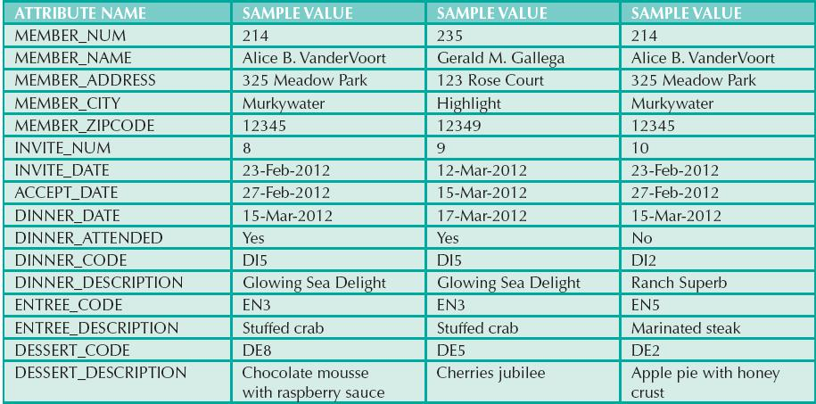
a. Given the table structure illustrated in Table P6.7, write the relational schema and draw its dependency diagram. Label all transitive and/or partial dependencies. (Hint: This structure uses a composite primary key.)
b. Break up the dependency diagram you drew in Problem 7a to produce dependency diagrams that are in 3NF, and write the relational schema. (Hint: You might have to create a few new attributes. Also, make sure that the new dependency diagrams contain attributes that meet proper design criteria; that is, make sure there are no multivalued attributes, that the naming conventions are met, and so on.)
c. Using the results of Problem 7b, draw the Crow’s Foot ERD.
8. Use the dependency diagram shown in Figure P6.8 to work the following problems.
a. Break up the dependency diagram shown in Figure P6.8 to create two new dependency diagrams: one in 3NF and one in 2NF.
b. Modify the dependency diagrams you created in Problem 8a to produce a set of dependency diagrams that are in 3NF. (Hint: One of your dependency diagrams will be in 3NF but not in BCNF.)
c. Modify the dependency diagrams you created in Problem 8b to produce a collection of dependency diagrams that are in 3NF and BCNF.
FIGURE P6.8 Initial dependency diagram for Problem 8
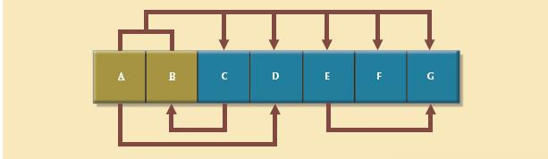
SOURCE: Course Technology/Cengage Learning
9. Suppose you have been given the table structure and data shown in Table P6.9, which was imported from an Excel spreadsheet. The data reflect that a professor can have multiple advisees, can serve on multiple committees, and can edit more than one journal.
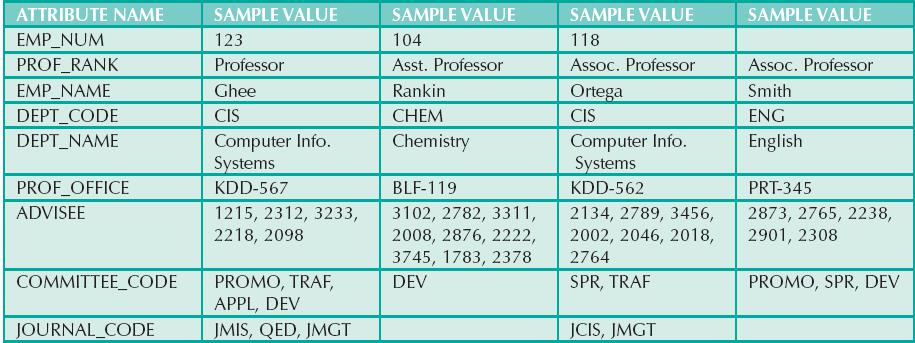
Given the information in Table P6.9:
c. Create the dependency diagrams to yield a set of table structures in 3NF.
d. Eliminate the multivalued dependencies by converting the affected table structures to 4NF.
e. Draw the Crow’s Foot ERD to reflect the dependency diagrams you drew in Problem 9c. (Note: You might have to create additional attributes to define the proper PKs and FKs. Make sure that all of your attributes conform to the naming conventions.)
10. The manager of a consulting firm has asked you to evaluate a database that contains the table structure shown in Table P6.10.
Table P6.10 was created to enable the manager to match clients with consultants. The objective is to match a client within a given region with a consultant in that region and to make sure that the client’s need for specific consulting services is properly matched to the consultant’s expertise. For example, if the client needs help with database design and is located in the Southeast, the objective is to make a match with a consultant who is located in the Southeast and whose expertise is in database design. (Although the consulting company manager tries to match consultant and client locations to minimize travel expense, it is not always possible to do so.) The following basic business rules are maintained:
• Each client is located in one region.
• A region can contain many clients.
• Each consultant can work on many contracts.
• Each contract might require the services of many consultants.
• A client can sign more than one contract, but each contract is signed by only one client.
• Each contract might cover multiple consulting classifications. (For example, a contract may list consulting services in database design and networking.)
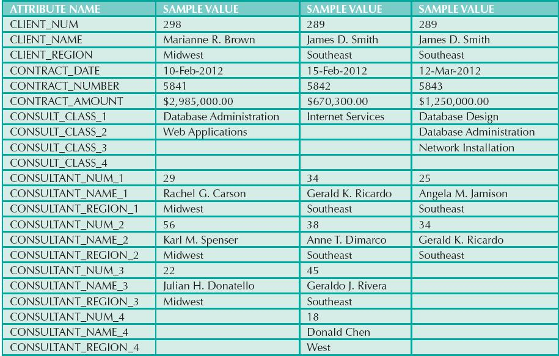
• Each consultant is located in one region.
• A region can contain many consultants.
• Each consultant has one or more areas of expertise (class). For example, a consultant might be classified as an expert in both database design and networking.
• Each area of expertise (class) can have many consultants. For example, the consulting company might employ many consultants who are networking experts.
a. Given this brief description of the requirements and the business rules, write the relational schema and draw the dependency diagram for the preceding (and very poor) table structure. Label all transitive and/or partial dependencies.
b. Break up the dependency diagram you drew in Problem 10a to produce dependency diagrams that are in 3NF and write the relational schema. (Hint: You might have to create a few new attributes. Also make sure that the new dependency diagrams contain attributes that meet proper design criteria; that is, make sure there are no multivalued attributes, that the naming conventions are met, and so on.)
c. Using the results of Problem 10b, draw the Crow’s Foot ERD.
11. Given the sample records in the CHARTER table shown in Table P6.11, do the following:
a. Write the relational schema and draw the dependency diagram for the table structure. Make sure that you label all dependencies. CHAR_PAX indicates the number of passengers carried. The CHAR_MILES entry is based on round-trip miles, including pickup points. (Hint: Look at the data values to determine the nature of the relationships. For example, note that employee Melton has flown two charter trips as pilot and one trip as copilot.)
b. Decompose the dependency diagram you drew to solve Problem 11a to create table structures that are in 3NF and write the relational schema.
c. Draw the Crow’s Foot ERD to reflect the properly decomposed dependency diagrams you created in Problem 11b. Make sure the ERD yields a database that can track all of the data shown in Problem 11. Show all entities, relationships, connectivities, optionalities, and cardinalities.
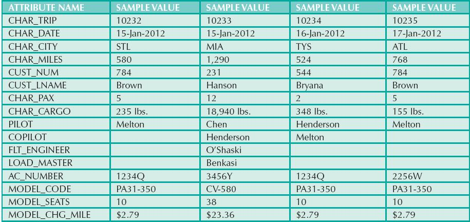